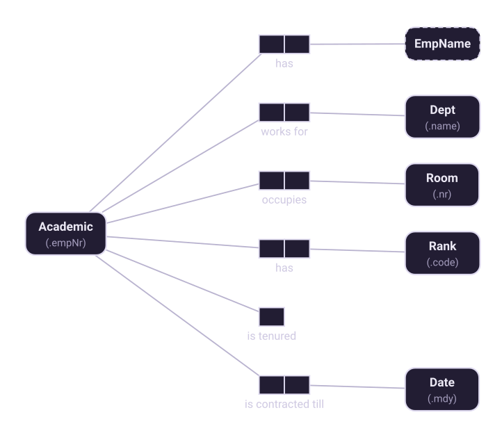
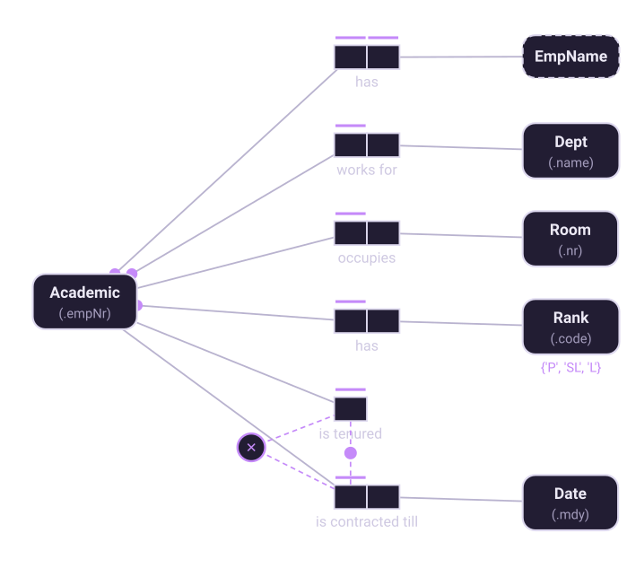

Chapter 9 of 10
The design procedure
Halpin's seven steps, worked end to end on a staff directory.
The seven steps
ORM comes with a procedure, the Conceptual Schema Design Procedure. It is not a formality: each step exists because it catches a class of error the previous step cannot.
| Step | Description |
|---|---|
| 1 | Transform familiar information examples into elementary facts, and apply quality checks |
| 2 | Draw the fact types, and apply a population check |
| 3 | Check for entity types that should be combined, and note any arithmetic derivations |
| 4 | Add uniqueness constraints, and check arity of fact types |
| 5 | Add mandatory role constraints, and check for logical derivations |
| 6 | Add value, set comparison and subtyping constraints |
| 7 | Add other constraints and perform final checks |
The example
We will model a fragment of a university staff directory. The report looks like this:
Emp Nr Emp Name Dept Room Rank Tenure / contract expiry
715 Adams A Computer Science 69-301 L 01/31/95
139 Cantor G Mathematics 67-301 P tenured
430 Codd EF Computer Science 69-507 P tenured
651 Jones E Biochemistry 69-803 SL 12/31/96Step 1 — elementary facts
Read the first row aloud as separate sentences, naming objects by definite description:
The Academic with empNr 715 has EmpName 'Adams A'.
The Academic with empNr 715 works for the Dept named 'Computer Science'.
The Academic with empNr 715 occupies the Room with roomNr '69-301'.
The Academic with empNr 715 has the Rank with code 'L'.
The Academic with empNr 715 is contracted till the Date '01/31/95'.
The Academic with empNr 139 is tenured.The quality checks: are these elementary (no "and" joining independent facts)? Are the objects well identified? The last row's column has produced two different fact types — being tenured and having a contract expiry — which a column-by-column reading would have missed. This is exactly what step 1 is for.
Step 2 — draw and populate

Populate each fact type with a row or two from the report. Anything you cannot populate is suspicious.
Step 3 — combine entity types, note derivations
Look for entity types that are really the same thing under different names. In Halpin's fuller version of this example, a second report described Professors, Senior Lecturers and Lecturers as separate types; the shared predicates reveal they are all Academics with different ranks, and collapsing them into one entity type with a Rank fact type is the single biggest structural improvement in the exercise.
Also note anything computable. If a later report shows a count of academics per department, that is derived — it is not stored, it is calculated, and it gets a derivation rule rather than a fact type.
Step 4 — uniqueness, and the arity check
Ask of each fact type: can this row repeat? Each academic has one name, one department, one room, one rank — so each of those fact types gets a bar over the Academic role. Then run the arity check from chapter 5: any n-ary fact type whose uniqueness constraint misses two roles must be split.
Step 5 — mandatory roles, and logical derivations
Now ask which roles every academic must play. Name, department and rank: yes. Room: not necessarily — a visiting academic may have none, so that role stays optional. Tenure is the interesting one: neither is tenured nor is contracted till is mandatory on its own, but their disjunction is, which is the inclusive-or from chapter 6.
The second half of the step asks whether any fact type can be derived from others without arithmetic — a functional chain you have recorded twice, for instance. Remove what can be derived, and write the rule down.
Step 6 — value, set comparison and subtyping constraints
Rank is a closed set: {'P', 'SL', 'L'}. Then inspect the optional roles for hidden
subtypes, as chapter 8 describes. In this small fragment the only optional role is Room, which any
academic may play, so no subtype is warranted — a useful negative result, since inventing subtypes
nobody needs is a common failure.
Step 7 — other constraints and final checks
Nothing can be both tenured and contracted, so those two roles are mutually exclusive. Combined with the inclusive-or from step 5, that is an exclusive-or: exactly one of the two.

The final checks are the ones worth slowing down for:
- Consistency with the examples. Take the original report and verify every row against the model. A row the schema forbids is either a bug in the schema or an exception nobody mentioned — and both are worth finding now.
- No redundancy. Is anything recorded twice, or derivable from the rest?
- Completeness. Can every question the report answers be answered from the model?
Then read the whole thing back. Factum's verbalization tab produces the sentences; walk through them with the person who owns the report. Every sentence they hesitate over is worth a conversation.
Each Academic has exactly one EmpName.
Each Academic works for exactly one Dept.
Each Academic occupies at most one Room.
Each Academic has exactly one Rank.
It is necessary that the possible values of Rank are {'P', 'SL', 'L'}.
Each Academic is tenured or is contracted till some Date.
No Academic is both tenured and contracted till some Date.That list is the specification. It is readable by someone who has never seen an ORM diagram, and it was generated from the model rather than written alongside it — so it cannot drift.
Going further. This chapter is the short version. Fact-Based Agents covers it as “The Design Procedure, Worked” — where the procedure actually gets hard, and how to run it as a loop with an agent rather than alone.
Eighteen chapters, 61 diagrams and 38 working models, on Leanpub.